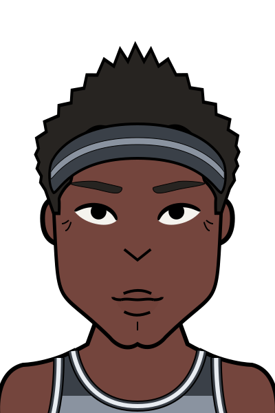

Mustafa Shakur

Development & Projection
Overall · Potential · Projection6-season projection · potential ceiling ≈ 42
Ratings
Season by Season
1 season on record| Year | Pos | Ovr | Pot | Height | Strength | Speed | Jumping | Endurance | Inside | Dunks/Layups | Free Throws | Mid Range | Three Pointers | Offensive IQ | Defensive IQ | Dribbling | Passing | Rebounding | Skills |
|---|---|---|---|---|---|---|---|---|---|---|---|---|---|---|---|---|---|---|---|
| 2010 | PG | 38 | 42 | 41 | 44 | 47 | 48 | 35 | 47 | 42 | 39 | 40 | 41 | 36 | 38 | 54 | 55 | 49 | — |
Contract & Injuries
Contract
Class of 2010Unsigned. No deal, salary history or games on record until the 2010 draft.